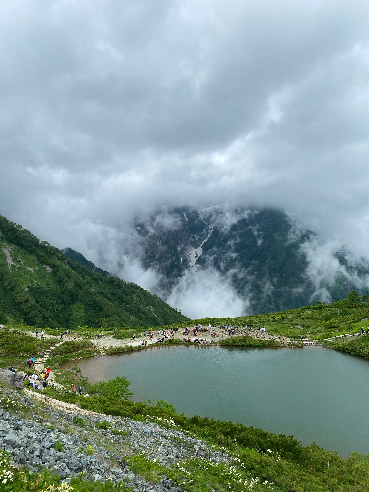
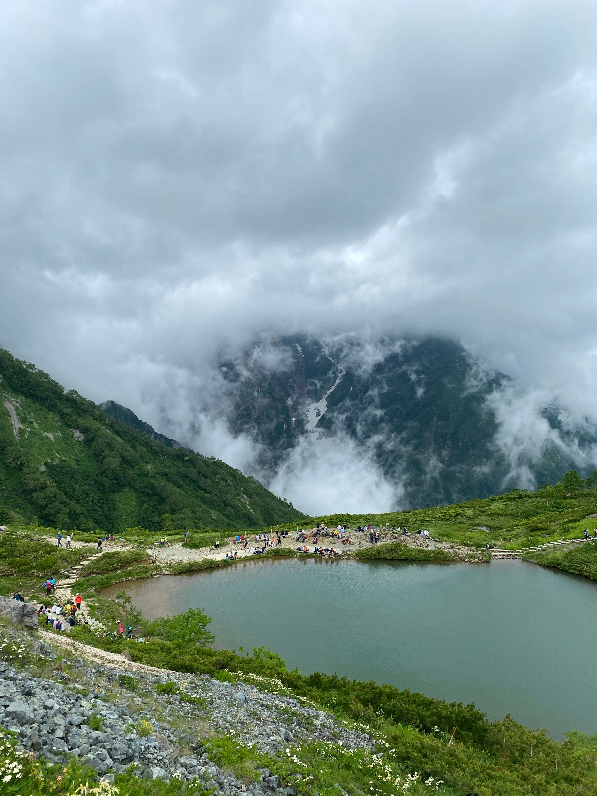

Ik had erg zin om iets avontuurlijks te doen dus ik heb op een wandelroute website gekeken naar mooie tochten. Toen kwam ik uit in Hakuba in Nagano. Dit leek best een afgelegen rustig dorp waar niks bijzonders zou zijn dus de verwachtingen waren laag. Echter na een lange busrit kwamen we er snel achter dat dit de Japanse alpen waren en de bergen flink hoog waren. Ons hotel was deel van een resort voor de olympische spelen in 1998. We hadden lukraak een olympisch skigebied uitgekozen om te wandelen. Hier zijn we met een skilift de voet van de berg op gegaan om vervolgens een klim te maken naar de top van een aanliggende berg. Dit was echt bijzonder mooi en de view was ondanks de wolken echt om van te genieten. We hebben op het ijs van de top gestaan en dit was best raar gezien het in de vallei rond de 30 graden was.

 
